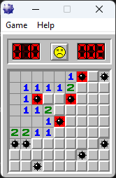

Introduction
I have faint memories from when I was around five years old, playing classic Windows XP games like SimCity and Space Cadet Pinball. Recently, I decided to revisit those games, not to relive childhood nostalgia, but to approach them from a security researcher's perspective. I wanted to understand how they work under the hood and explore whether I could modify their behavior without access to the source code. To keep things manageable, I focused on Solitaire and Minesweeper, since the others were much more complex and would have taken way more time to reverse engineer.
What is Reverse Engineering?
Reverse engineering is the process of discovering how something works by examining its structure and behavior, rather than having access to blueprints or source code. In software, this means analyzing compiled binaries to understand their functionality, algorithms, and data structures.
There are two main approaches to reverse engineering software:
- Static Analysis: Examining the code without running it, using disassemblers to convert machine code back into readable assembly
- Dynamic Analysis: Observing program behavior while it's running, using debuggers and memory analysis tools
Tools of the Trade
In attacking these games, I only used two tools:
- Ghidra: A powerful tool for analyzing compiled code
- x32dbg: A Windows debugger for examining program execution flow
Case Study: Solitaire
So I decided to mess around with the classic Windows Solitaire game. It was some pretty simple reversing with some DLL hijacking. Here's how it went down.
Finding the Scoring System
First thing I wanted to do was figure out how the scoring worked. I found this "None" option in the game and thought that might be interesting to explore. Above that option, there was this Dialogue Item Structure that I could expand in my analysis tool.
The key was paying attention to the id field. I searched for that scalar value and found it was being used in CheckRadioButton() from winuser.h. Not super useful on its own, but it led me to trace up through the code to find the function that actually sets the score mode.
Here's where it got interesting: I found that this function calls RegCreateKey, which goes to a specific registry location on your computer. When I looked at it through the registry editor, I realized the game gets the score option directly from the Windows registry! Pretty clever way to store settings.
Breaking Down the Score Logic
Moving into x32dbg for some dynamic analysis, I set up some breakpoints to see what was happening in real time. There was this breakpoint at address 203 that kept getting called constantly - I figured that was just drawing the score on screen, so I got rid of it to reduce noise.
But then I found the good stuff:
- Address 306f gets hit every 10 seconds and gets called when I lose points
- Address 505f gets called when I increase my score - this was the most interesting one
Analyzing that 306f function, I discovered it uses another function at 23b5 to adjust the score back to 0 if it goes negative (when a flag equals 4). Then it sets the value at a specific memory address to the new score. I thought I found the score address, but it's actually minus 0x30 since 0x30 gets added every time the score updates.
Timer Manipulation
Right next to where the score is stored, there are bytes that consistently change - turns out that's the timer! I set a breakpoint on those changes, and in Ghidra I just removed the line that sets that address to a new value. Boom. Disabled the timer completely.
Custom Scoring Values
To make the score increment by whatever value I wanted, I had to reverse engineer where parameter 3 comes from in the scoring function. Once I found the data region, I saw it was manipulating values by byte size.
Turns out there's actually a lookup table with predetermined values for how much to change the score by different actions. I just changed all the negative values to 0 and bumped up the positive ones to something ridiculous.
Force Win Feature
I wanted to add a way to instantly win using the existing easter-egg, so I found the win condition string and its resource ID. Using memory search, I discovered the same ID was also used in an accelerator table (the structure Windows uses for keyboard shortcuts).
Had to learn about the accelerator structure format, which uses padding since it starts with a byte that stores bits indicating whether you use Ctrl, Shift, etc., then goes to a word for the actual key, with 00 bytes for padding.
DLL Hijacking Fun
This is where things got really interesting. I noticed Solitaire uses Cards.dll in the same directory as the executable, so I decided to hijack it and inject my own code.
The process was pretty straightforward:
- Find a function in the DLL that gets called - cdtInit was perfect since it only runs at the beginning
- Create a .def file that describes the DLL attributes and specifies which functions to forward to the original DLL
- Write the actual C++ code
My .def file looked something like:
cdtDraw=cards_original.dll.cdtDraw @3
This means if we get a function call for cdtDraw, forward it to the original cdtDraw function. The @3 is the ordinal number you can find in Ghidra.
For the C++ code, I followed Microsoft's boilerplate and created an identical function to the one I was hijacking. The cool part was I could inject whatever I wanted, so made it play a video through a system() call! Then I made sure to grab and run the original function after so the game still worked normally.
Case Study: Minesweeper
What started as "let me see if I can remove some mines" turned into three completely different approaches to cheating, each with its own pros and cons. Here's how I tackled the classic Windows game.
Background: Finding the Sound Resources
I started by locating where the sound resources are pulled in Ghidra. There are 3 WAV files total that get pushed to the stack depending on certain conditions. I used breakpoints on the three addresses in x32dbg to figure out which address held which sound, and eventually found the one that contained the mine exploding sound.
I traced that function call upwards, and it only took a few functions until I found something suspicious. A function doing a check on what appeared to be a 2D array, which is exactly what I'd expect the game to use for the grid. I decided to call the function that led to the exploding sound the "explodeBomb" function.
As expected, I could see some bytes after that address being modified as I clicked squares, and they changed in row-major order. There were different values like 0x0F and 0x8F. It'll come up later but a lot of the game logic appeared to be implemented using bit operations.
Each of the grid slots can be represented as:
- 0F (00001111) - undiscovered square with no mine
- 8F (10001111) - undiscovered square with a mine
- 4{x} (01000000) - discovered square with no mine, where x = number of adjacent mines
- CC (11001100) - discovered square with a mine
Attempt 1: Get Rid of Mines
First Try (Failed): I couldn't prevent mineAmount from being set to 0 without breaking the game completely.
Second Try (Success): I found the loop that performs bitwise operations when creating mines during initialization. By default, each square starts as 0x0F. The code does an AND operation with 0x80 (10000000), and if no mine is there, it flips the leftmost bit to 1 to indicate a mine. My solution was simple, just remove the part where it flips the bit, so no more mines get created.
This approach worked but was pretty boring as a way to cheat the game. The squares will reveal themselves instantly, and now you can't even click anything. Not only that, but it doesn't win you the game, since the smiley face doesn't put on his shades
Attempt 2: Remove the "game over"
Inside the explodeBomb method, I tried to find what was actually causing a game over. This would be found in one of two places: either in another function being called, or through some data being changed.
I investigated many of the functions, and usually I could tell they were graphics-related when I saw references to pixels, bitmaps, or similar graphics terminology. That seemed to be what most of them were for.
But while messing around with the data, I discovered that if *DAT_01005000 doesn't get set to 0x10 and instead stays as 0x1(I got 0x1 from x32dbg), you can continue playing even after hitting a mine. This actually fulfilled my goal since you can still win and put your name on the leaderboard. However depending on who you ask, you technically lose since you hit a mine.
Plus, every click after the mine revives the poor smiley face just long enough to remember he's supposed to be dead, then he dies again. I've basically turned Minesweeper into a torture simulator..
Attempt 3: Don't Even Hit a Mine in the First Place
There's one place where all the mines end up being drawn, and that's in the explodeBomb method where you lose. I used the logic that if I could find which exact function handles the drawing and call it elsewhere, I could achieve the same result.
I used the debugger to step through everything that explodeBomb does, which helped me identify the function that draws the mines by observing the game's behavior.
This function requires a bit of setup, notably the param_1 parameter. Using the debugger, I found that this is usually just equal to 0, so in my custom code, I just used a mov instruction to put 0 into the ESI register.
The tricky part was finding somewhere to put these bytes. The function that calls explodeBomb has a bunch of labels in the assembly, so I found one that wasn't really used in typical gameplay and filled those bytes with what I needed.
I modified LAB_0100356c and kept the jump to the label that returns out of the function cleanly. Then, to jump to my code, I changed some bytes that originally jumped to the return label to instead jump to my custom label.

With this approach, I never actually lose, and the smiley face stays happy throughout the game. It's the best solution since it reveals all the mines without technically triggering a loss condition.
Summary
Each approach had its own merits:
- Attempt 1: Simple but boring - basically removes the gameplay
- Attempt 2: Allows continuation after hitting mines but technically counts as a loss
- Attempt 3: Difficult code injection but reveals mines without losing, and Smiley stays happy
The progression from simply removing mines to manipulating game state to custom code injection shows how reverse engineering often involves multiple approaches to solve the same problem, each with different trade-offs.
Conclusion
Reverse engineering classic Windows games was my introduction to the niche, and was one of the most entertaining ways I ever learned something.
What started as curiosity about childhood games evolved into practical knowledge applicable to any kind of software. It's a perfect example of how random exploration can lead to some cool technical skills. Little did I know this rabbit hole would lead to much darker and more interesting places than 90's entertainment...